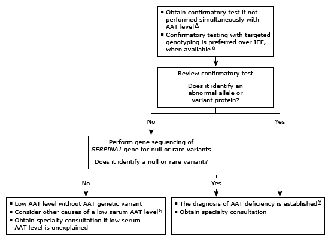

Initial evaluation of low serum alpha-1 antitrypsin level in adults¶

This algorithm is intended for use with additional UpToDate content on AAT deficiency.
AAT: alpha-1 antitrypsin; IEF: isoelectric focusing. ¶ A reasonable threshold for differentiating normal genotype from other genotypes with 1 or more deficient alleles is approximately 20 micromol/L (100 mg/dL), depending on the assay and specific laboratory. AAT is an acute phase reactant. An acute illness is unlikely to mask AAT deficiency in those with the PI*ZZ genotype but can elevate AAT levels into the normal range in PI*MZ and PI*SZ heterozygotes. Interpretation of a specific abnormal result should be based upon the reference range reported with that result. Δ UpToDate prefers performing simultaneous genotype testing for common variants (eg, F, I, S, Z) in all patients at the time of initial serum AAT measurement. ◊ IEF identifies whether an abnormal protein migration pattern (also known as the phenotype) is present. With the availability of targeted genotyping and gene sequencing, IEF is performed less often. However, either targeted genotyping or IEF, in combination with a low serum level, is acceptable for the diagnosis of AAT deficiency. § AAT levels can be low in the absence of AAT deficiency (eg, variation in the assay or factitious due to improper storage of specimen). ¥ There is no need to obtain another confirmatory test to establish AAT deficiency.